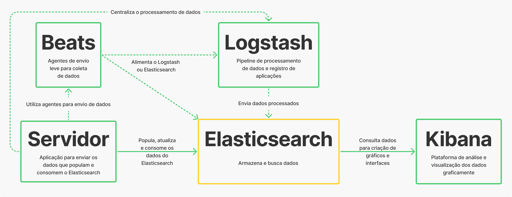
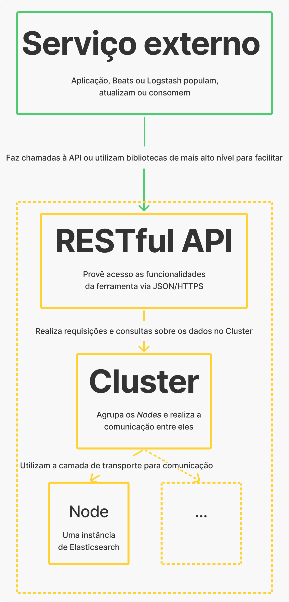
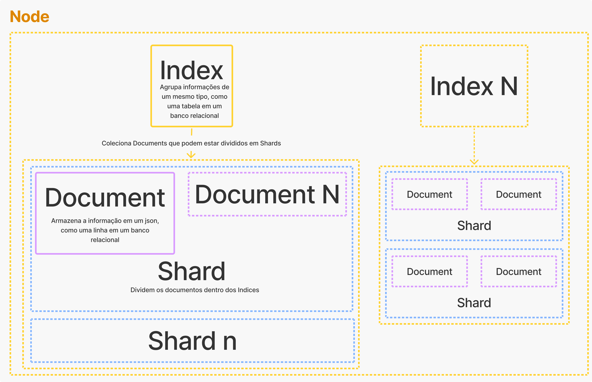

Documentação Arquitetural - Elasticsearch
Autores
Este documento foi produzido por Túlio Araújo Cunha.
- Matrícula: 118210965
- Contato: tulio.cunha@ccc.ufcg.edu.br
- Projeto documentado: https://github.com/elastic/elasticsearch
Descrição Arquitetural – Serviço de análise do Elasticsearch
Este documento descreve parte da arquitetura do projeto Elasticsearch. Essa descrição foi baseada principalmente no modelo C4.
Descrição Geral sobre o Elasticsearch
O Elasticsearch é uma ferramenta para realização de buscas e análise de dados construída para trabalhar com grandes volumes de dados, permitindo indexar documentos e realizar buscas nesses documentos em quase tempo real. Com ele é possível trabalhar com dados de variados tipos, como textuais, numéricos, geoespaciais, estruturados e não estruturados. Além disso, é o componente central do Elastic Stack, que é um conjunto de ferramentas para ingestão, enriquecimento, armazenamento, análise e visualização de dados.
Objetivo Geral
O Elasticsearch é uma ferramenta de código aberto de análise e pesquisa de full-text. Para isso, dados são guardados como documentos (como o MongoDB) que são constituídos de campos que armazenam basicamente qualquer tipo de informação.
Objetivos Específicos
Costumeiramente utiliza-se o Elasticsearch para campos de pesquisa em aplicativos, que dá suporte a diversas funcionalidades como preenchimento automático, correção de erros de digitação, destaque de correspondências, entre outros. Além disso, é possível realizar consultas que agregam dados para construção de gráficos, analisar logs de aplicações ou métricas do sistema no caso de um APM (Application Performance Management). Outra maneira de fazer uso da ferramenta é com envio de eventos, como vendas, cliques em um site, ligações, e-mails.
Contexto
O Elasticsearch se apresenta como o coração da Elastic Stack, sendo um motor distribuído de pesquisa e análise dos dados. O Logstash e Beats facilitam a coleta, agregação e incrementam os dados para armazená-los no Elasticsearch, porém não são essenciais, sendo possível consumir a API do Elasticsearch direto do sua aplicação. Também não essencial, mas altamente recomendado, o Kibana se apresenta como uma plataforma de análise e visualização gráfica dos dados contidos no Elasticsearch, economizando um tempo precioso se utilizada.

Containers
O Elasticsearch utiliza-se de uma RESTful API para sua comunicação com serviços externos, como a aplicação criada ou outros componentes da Elastic Stack (Logstash, Beats ou Kibana). Essa conversa também pode ser facilitada por diversas bibliotecas (clients) disponibilizadas nas linguagens de programação mais utilizadas (Java, Javascript, Python, entre outras). O serviço externo utiliza essa API para se comunicar com o Cluster que tem o papel de agrupar e realizar a comunicação entre um ou mais Nodes, que por sua vez, são quem executam uma instância do Elasticsearch e utilizam a camada de transporte para se comunicarem - assim, todos os Nodes se conhecessem em um Cluster e podem encaminhar uma requisição de um cliente para o Node apropriado - e deixam a camada HTTP para os clientes REST.

Componentes
Olhando mais afundo o Node, podemos observar que dentro dele, são implementados Indices, que funcionam de maneira semelhante à tabela em um banco de dados relacional. Dentro de cada Index, armazena-se Documents que salvam a informação do banco em um padrão json. Por sua vez, esses Documents podem ser agrupados em diversos Shards dentro da cada Index, sendo o Shard uma implementação do Lucene Index que internamente possuem segmentos, que funcionam como mini índices, e dentro dos segmentos outras estruturas de dados, como inverted index e os campos com seus valores.

Código
Nesta etapa não faremos diagramas que apresentam detalhes da implementação. Faremos isso mais adiante.
Visão de Informação
Levando em conta a principal funcionalidade do Elasticsearch, vamos simular uma pesquisa de um texto. Inicialmente, o texto passa por um processo para extrair as palavras relevantes da entrada, removendo artigos, acentuação, letras maiúsculas, criando assim tokens que podem ser aproveitados pelo inverted index utilizado pelo Lucene Index. Nessa pesquisa, o Elasticsearch pesquisa por todos os shards em busca de documentos que encaixem com os tokens criados logo antes. Após a obtenção desses documentos, extraem-se informações como a frequência do termo (TF) e a frequência do documento (DF), que são, respectivamente, a frequência do termo em um dado documento e a frequência do termo em todos os documentos. Com esses valores, pode-se calcular a relevância de um documento para o texto de entrada, por meio do cálculo TF / DF. Por fim, ordena-se os documentos pela relevância de cada um e é finalizada a pesquisa.